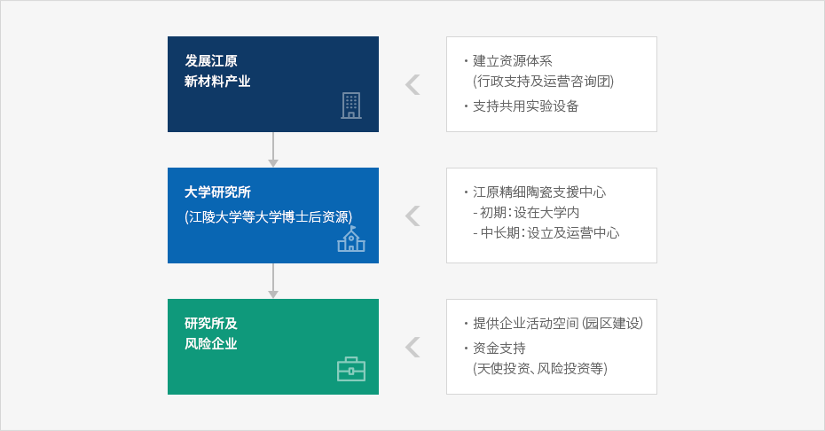

新材料产业
- Home
- 主要产业
- 新材料产业
新材料产业的特性
所谓新材料，是指以原有的原料或新原料为基础，应用新制造工艺与加工技术，赋予新的特性，增加原有产品所无法满足的新功能，实现高附加值的材料。
新材料不是最终消费品，而是投入于尖端产业等的材料，鉴于此，就新材料产业的经济波及效果而言，与直接效果相比，其对相关产业的间接效果及外部经济效果非常大。
江原圈的新材料产业现况
-
江原地区在与原有材料企业相衔接下，新材料产业发展可以期待，在产业结构升级方面，前景光明。
- 江原地区的陶瓷·土石产品、非金属、稀有金属等材料相关产业比重较高，特别是精细陶瓷方面，前景良好领域有氧化铝陶瓷、氧化锆陶瓷、合成金刚石、新型玻璃等结构陶瓷、触媒·载体陶瓷、cementitous Ceramic 陶瓷等
-
江原地区在地方自治团体的主导下，活跃地推进科学技术政策，构建有利于提高地区技术实力、培养研究·技术人才、开创新产业的环境。
- 江陵正在推进中的尖端科学产业园区建设、石材复合新材料研究中心等产·学·研相互合作的必要性增强。
-
与首都圈的高速连接网正在扩充当中，一旦具备了能够保证生产的效率性及供求顺畅化的环境条件，则有利于以多品种小量生产为特性的新材料产业发展。
- 江原道东海岸地区与新材料产业发达的日本邻近，可以构建与日本新材料企业的合作体制，谋求增长。
中央政府的新材料产业培育方案
- 作为电子、通信、航天、医疗等所有产业领域的核心材料，产业资源部正在扩大对具有高附加值的新材料产业的试验分析、评估基础。
- 陶瓷新材料综合试验分析评估中心” 通过陶瓷新材料的超精密试验分析评估、新评估方法开发、标准化与相关资料的 数据 化，对陶瓷行业的试验分析评估提供支援。
- 通过与已构建的精细陶瓷 Pilot Plant 衔接，促进高进口依存度的陶瓷新材料的开发及产业化。
培育新材料产业需要的功能
产·学·研共同研究合作
- 新材料产业作为尖端知识产业，在替代或完善原有材料的同时，用作汽车、航天、信息通信产业等尖端产业的核心材料，堪称代表性的未来增长型产业。
- 中小企业的技术开发需要搞活产·学·研共同研究。
- 就江原地区而言，以精细陶瓷领域为中心，构建研究开发合作体制。
人才培养
-
新材料产业为了具备持续的研究力量，确保高级研究人才迫在眉睫
- 面向一般企业扩大委托研修功能，以便能够使新材料相关学科出身的高级人才转换为产业人才。
-
考虑以原有材料相关企业为中心，在江陵地区设立可以支援尖端技术力的新材料产业支援中心。
- 江原新材料产业支援中心担负新材料技术开发支援、国内外市场需求调查、产业条件分析等功能，提出新材料开发及产业化战略。
- 构建实验室创业、分离创业等使大学及企业可以培养生物风险企业的创业支援系统。
江原新材料产业培育战略
-
新材料产业相关技术开发需要巨大投资，但国内中小企业资金实力不足，大企业由于追求收益性，难以进行积极投资。
- 从道政府角度树立对新材料产业的研究开发支援计划，奠定国内新材料产业发展基础。
-
与其它城市相比，江原地区的石灰石等基础材料相关中小企业占较高比重。
- 考虑到环境条件特性，需要从道政府的角度培育、发展新材料产业，树立与其它市道差别化的地区产业振兴战略。


-
发展江原新材料产业
- 建立资源体系（行政支持及运营咨询团）
- 支持共用实验设备
-
大学研究所（江陵大学等大学博士后资源）
-
江原精细陶瓷支援中心
- 初期：设在大学内
- 中长期：设立及运营中心
-
江原精细陶瓷支援中心
-
研究所及风险企业
- 天使投资
- 风险投资等

事业提案
重点培育精细陶瓷领域
-
为实现新材料产业的知识集约化，需要可以综合提供技术支援、信息提供、人才支援、行政支援的系统。
- 需要积极吸引高效执行这种技术及资金支援所需的新材料产业支援中心。
-
新材料产业在产业特性上，需要高级人才，需要通过吸引相关企业的原有人才再教育所需的技术人才中心，扩充人才基础。
- 特别是为了实现大学相关高级人才的产业化，更需要设立运营人才教育及培养所需的专业人才培养中心。